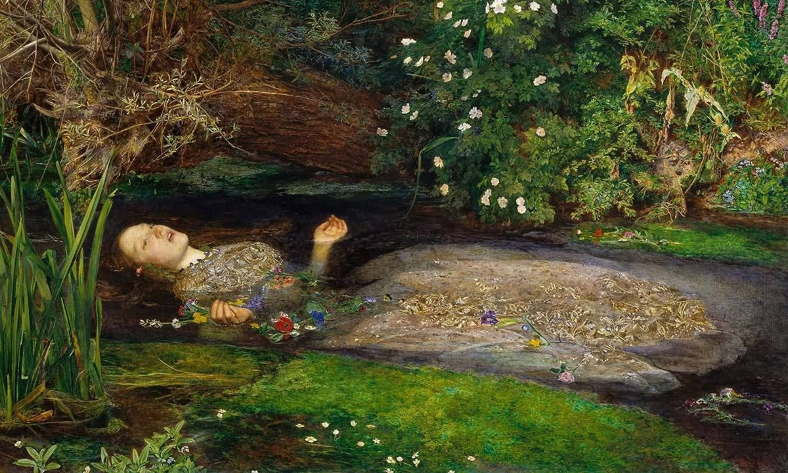
Pre-Raphaelite
The Cult of Thought
A sanctuary for those who seek beyond the veil.
Art, philosophy, music, and the great mysteries of human
knowledge.
I. The Origin
We live in an age of fleeting flashes. Culture has been reduced to three-second fragments, consensus algorithms, and the tyranny of easy approval.
Nocturna was born as an act of resistance. We believe beauty requires time, that music deserves to be heard in silence, and that great books still have the power to transform souls.
Here we gather what the modern world wants us to forget: paintings that disturb, philosophy that unsettles, music that needs no four chords to move us.
Read the Manifesto CompletoContemplation requires time.
Thinking begins where obedience ends.
What an age abandons does not necessarily lose its value.
Every worthy work demands a second look.
Not everything valuable must be easy.
Culture should transform, not merely entertain.
It also belongs to those who return to look at it.
No work exists outside its time.
Every act of contemplation demands a deeper reading.
Not everything beautiful should be comfortable.
An image can outlive the age that created it.
Every gaze reveals as much about the observer as it does about the work.
Against the noise, preserve the ability to stop.
A great work is not consumed: it is inhabited.
To ask is to refuse inherited answers.
It is a way of understanding and transforming the world.
Not every silence needs to be filled.
When the noise disappears, the questions remain.
II. The Archives
Explore the rooms where we keep what time must not erase.
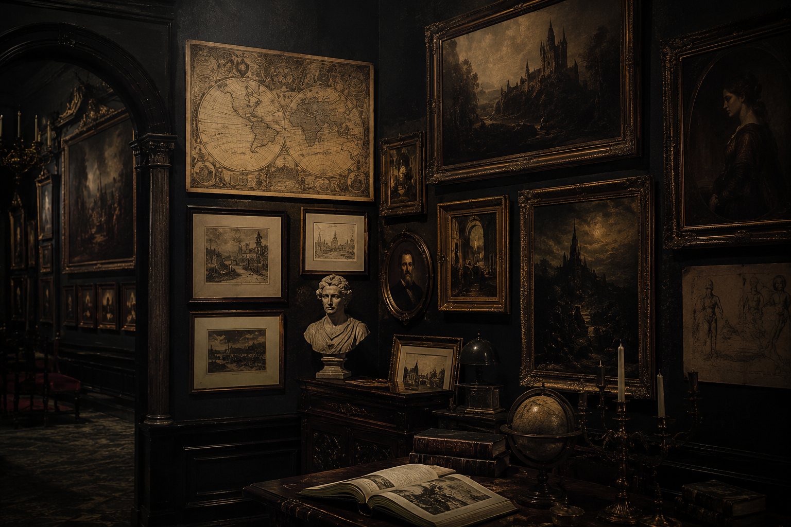
Commented masterpieces. From the Pre-Raphaelites to the darkest Symbolism.
Enter the chamber →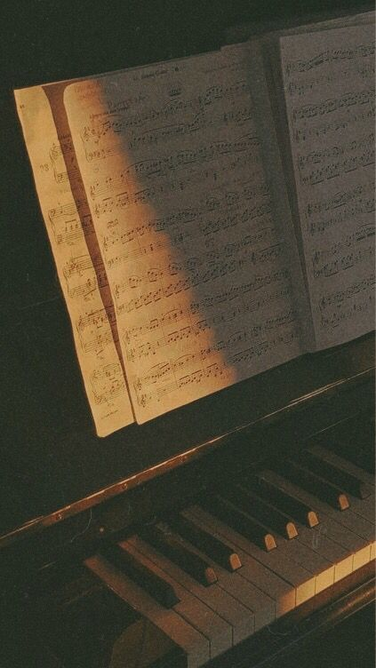
From Bach to doom metal. Music as a portal to the ineffable.
Enter the chamber →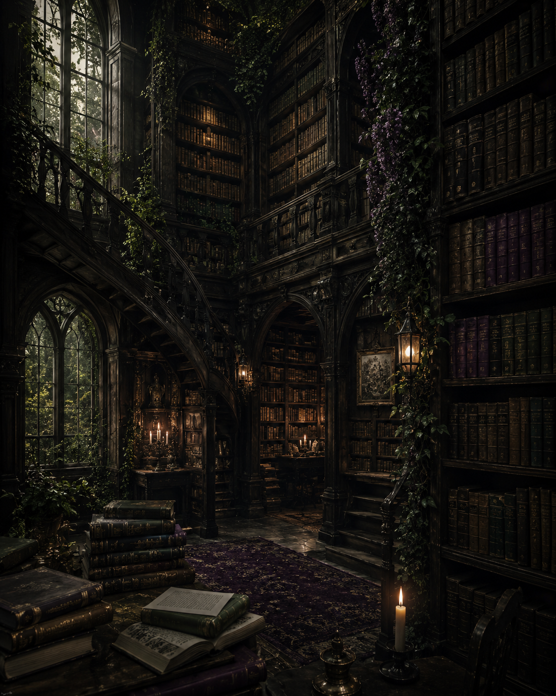
Philosophy, occultism, and forbidden literature. Books that transform minds.
Enter the chamber →The Gallery Nocturna
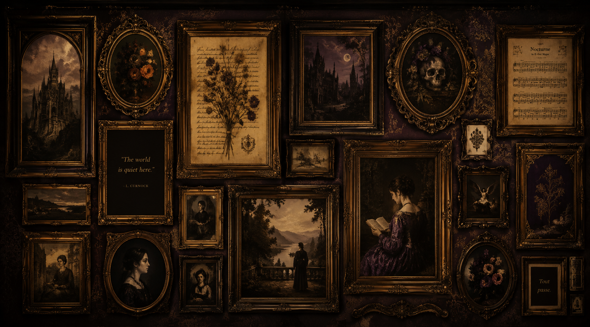

01 Klimt — The Kiss · 1907–08 · Oil and gold leaf
Artwork of the Week
Klimt dissolves the bodies in a cascade of gold and flowers. There is no distinction between figure and ornament: desire becomes architecture, and love becomes sacred geometry.
Two distinct textile patterns — angular squares for him, floral circles for her — tell the story of the difference that makes union possible.
Full Analysis
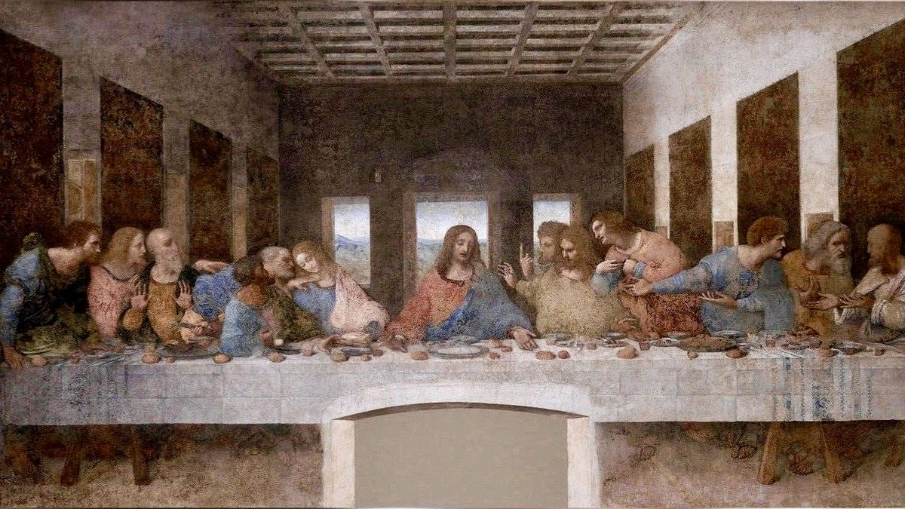
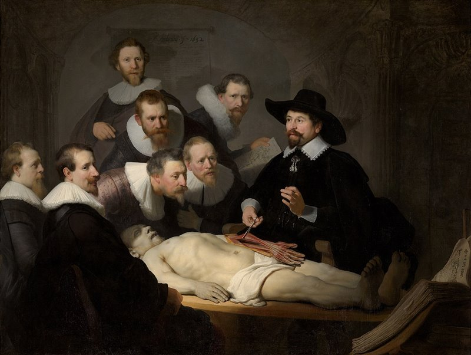
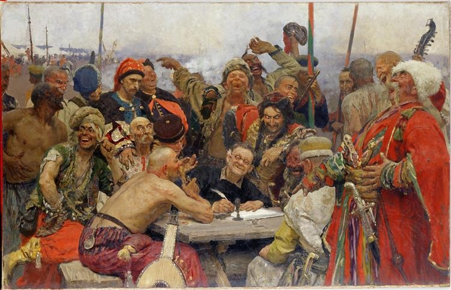

The Chamber of Music
Nocturna's music is not entertainment. It is ceremonial. From Chopin's nocturnes to the darkest ambient, we select works that open doors in the mind.
The Library Nocturna
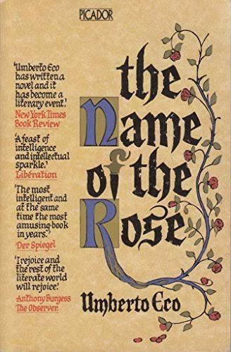
The Name of the Rose
Umberto Eco
Published in 1980, Umberto Eco's novel combines the tradition of the historical novel with mystery and philosophical reflection. The story takes place in a fourteenth-century Benedictine abbey, in a context marked by the religious and political disputes of the Middle Ages.
William of Baskerville and his young disciple Adso of Melk arrive at an abbey where a series of mysterious deaths begins to unfold. While William attempts to discover who is responsible, the two confront the secrets of the library and the internal conflicts of the religious community.
Faith and reason · knowledge and power · heresy · interpretation · censorship · mystery
The library functions as one of the novel's great symbols: it represents a form of knowledge that can liberate, but also a power that can be controlled.
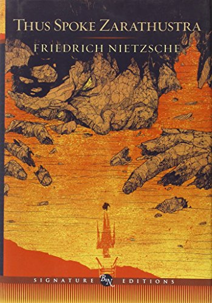
Thus Spoke Zarathustra
F. Nietzsche
Published between 1883 and 1885, Thus Spoke Zarathustra is one of Friedrich Nietzsche's central works. The book takes the form of a philosophical narrative in which Zarathustra, after years of isolation, returns among men to announce a new way of understanding existence.
Zarathustra leaves his solitude and begins to travel through the world, sharing his teachings. Through speeches, encounters, and parables, he develops ideas such as the Übermensch, the will to power, and the eternal recurrence, while confronting the difficulty of communicating a form of thought that demands a radical transformation in the way one lives.
Übermensch · will to power · eternal recurrence · nihilism · transformation · creation of values
The work deliberately uses poetic and symbolic language to express philosophical ideas. Zarathustra does not simply seek to offer a new system of beliefs, but to provoke a transformation of the individual and question inherited values.
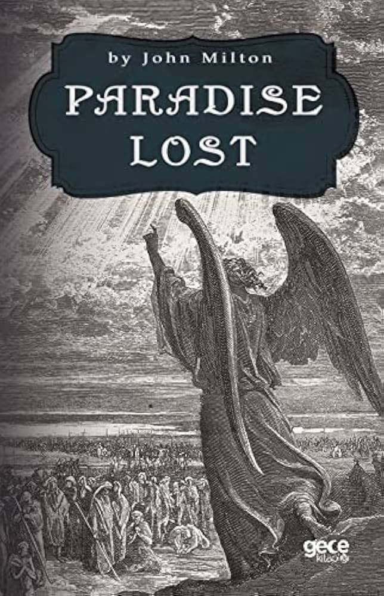
Paradise Lost
John Milton
Originally published in 1667, Paradise Lost is John Milton's great epic poem. The work recreates the fall of Adam and Eve and Lucifer's rebellion from a perspective deeply shaped by Christian tradition and classical culture.
The poem narrates Satan's rebellion against God, his fall, and his subsequent attempt to take revenge by corrupting humanity. The story leads to the moment when Adam and Eve are tempted and expelled from Paradise.
Rebellion · freedom · obedience · fall · temptation · guilt · destiny · the nature of evil
Milton turns Satan into a figure of enormous rhetorical power, capable of being simultaneously fascinating and condemnable. The greatness of the poem lies in that tension: rebellion may appear heroic in its rhetoric, while its consequences reveal the price of turning pride into an absolute principle.
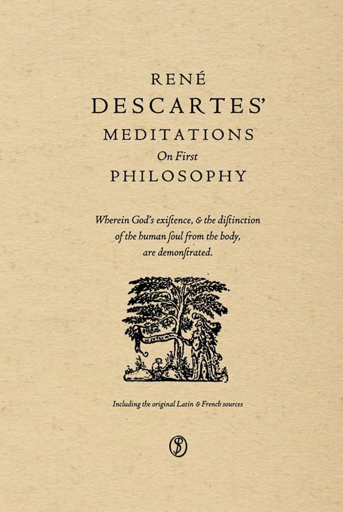
Meditations on First Philosophy
René Descartes.
Originally published in 1641, René Descartes' Meditations on First Philosophy seeks to establish an absolutely certain foundation for knowledge. Descartes begins by questioning everything that can possibly be doubted, including the information provided by the senses.
Through a series of meditations, Descartes takes doubt to its ultimate consequences and discovers a first certainty: while he is thinking, he cannot doubt that he exists. From the cogito, he develops his investigation into the existence of God, the distinction between mind and body, and the possibility of attaining true knowledge.
Methodical doubt · cogito · existence of God · reason · mind and body · certainty · knowledge
The work represents one of the foundational moments of modern philosophy. Descartes uses doubt not as a skeptical conclusion, but as an instrument for finding a certainty that can serve as a foundation for knowledge. The cogito thus becomes the starting point of a philosophy centered on reason and the subject.
III. The Chamber
Philosophy · Esoteric
From Plato to Leibniz, the idea that the universe forms a perfect hierarchy of beings —from inert matter to God— has shaped Western thought for two millennia. The alchemical book visually represents what philosophy can barely articulate in words.
Read the Full EssayIV. The Questions
Some questions have no answers. Others have too many. Here we collect the questions most frequently asked by initiates who approach Nocturna's threshold for the first time.
Nocturna is an independent cultural project. We are not a magazine, not a podcast, and not a social network. We are a sanctuary.
We bring together art, philosophy, music, and literature under the premise that deep thought is an act of resistance in the twenty-first century. If the world moves by flashes, we prefer the slow flame of the candle.
No. The only condition for entering Nocturna is genuine curiosity.
We write for those who have studied philosophy for years and for those who have just discovered that Klimt was more than a golden wallpaper. Initiates and newcomers are equally welcome at this threshold.
"There is no ignorance, only different degrees of wonder."
The Nocturnal Codex arrives in your inbox every week, without fail. Inside you will find a long-form essay, a commented artwork, a musical recommendation, and, when the moment calls for it, something darker than usual.
In the Archives (Gallery, Music, Library), content is updated irregularly, whenever something worthy of attention appears on the horizon.
The word cult has a bad reputation, and we think that is perfect. Originally, it simply meant care and reverence: to cultivate something with devotion.
We believe thought deserves that kind of attention. Not fast, utilitarian, algorithmic thought. The kind of thought that sits before a painting for two hours, that rereads the same paragraph five times until something opens.
That is what we cultivate. That is the cult.
The Chamber is open to outside voices, but selection is strict. We do not seek volume. We seek precision, depth, and that rare instinct for knowing when a work deserves to be contemplated in silence.
If you have something to say about art, philosophy, music, or literature that belongs nowhere else, write to us. The threshold is open to those who arrive with clean hands and hungry minds.
Contact the Codex →The Nocturnal Codex
A weekly letter featuring the finest works, philosophical reflections, and the best-kept secrets of dark culture.